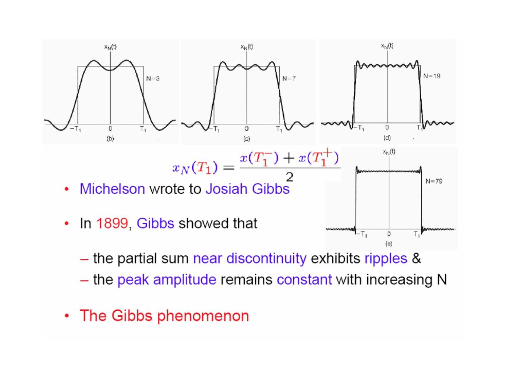
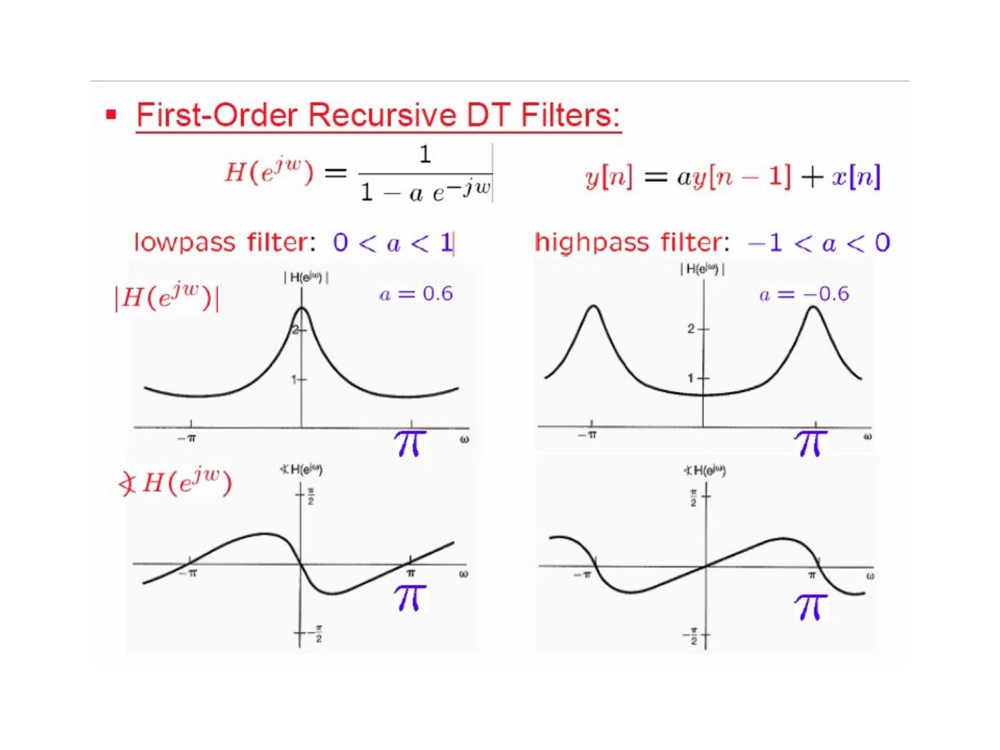

· EEM301
EEM301 Sinyaller ve Sistemler I: Chapter 3 — Fourier Serileri ve Süzgeçler (İsmail Avcıbaş)
EEM301 – Sinyaller ve Sistemler I · 16.08.2006 · 18.10.2026
Başkent Üniversitesi EEM301 dersi için İsmail Avcıbaş’ın hazırladığı Chapter III: Fourier Series Representation of Periodic Signals sunumu (98 sayfa). Kaynak PowerPoint’in oluşturulma tarihi 16 Ağustos 2006, son kaydı 6 Ekim 2009. Metni görsel olarak saklanan slaytların konu anlatımı, temel formülleri ve örnekleri aşağıya aktarıldı. Sunumun PDF kopyası yazının sonunda indirilebilir.
Historical perspective and eigenfunctions
The presentation traces harmonic representations from vibrating strings to Fourier’s work on heat conduction, then introduces complex exponentials as a convenient basis for LTI systems.
For a CT input e^(st), convolution gives the output H(s)e^(st), with H(s)=∫h(τ)e^(−sτ)dτ. For a DT input zⁿ, the output is H(z)zⁿ, with H(z)=Σh[k]z^(−k). The exponential is an eigenfunction and the multiplier is its eigenvalue.
By superposition, Σaₖe^(sₖt) produces ΣaₖH(sₖ)e^(sₖt). This is the basis for computing periodic steady-state responses harmonic by harmonic.
Continuous-time Fourier series
For period T and ω₀=2π/T:
- Synthesis: x(t)=Σₖ₌₋∞^∞ aₖe^(jkω₀t).
- Analysis: aₖ=(1/T)∫ over one period x(t)e^(−jkω₀t)dt.
- a₀ is the average or DC value.
Orthogonality gives ∫₀ᵀ e^(j(k−m)ω₀t)dt=T when k=m, and zero otherwise. For a real signal, a₋ₖ=aₖ*. Writing aₖ=Aₖe^(jθₖ) gives x(t)=a₀+2Σₖ₌₁^∞ Aₖcos(kω₀t+θₖ).
Example 3.4 takes x(t)=1+sinω₀t+2cosω₀t+cos(2ω₀t+π/4). Its nonzero coefficients are a₀=1, a₁=1−j/2, a₋₁=1+j/2, a₂=e^(jπ/4)/2 and a₋₂=e^(−jπ/4)/2.
For a periodic unit rectangle occupying |t|<T₁ within a period T, a₀=2T₁/T and aₖ=sin(kω₀T₁)/(kπ) for k≠0.
Convergence and Gibbs phenomenon
Finite energy over one period ensures convergence in mean square. The stated Dirichlet conditions require absolute integrability over a period, finitely many extrema and finitely many finite discontinuities.
At a jump, the series converges to the average of the left and right limits. Near the jump, the truncated series exhibits ripples whose peak overshoot persists as more harmonics are included: the Gibbs phenomenon.

Properties of CT Fourier series
| Signal operation | Fourier-series coefficients |
|---|---|
| Ax(t)+By(t) | Aaₖ+Bbₖ |
| x(t−t₀) | aₖe^(−jkω₀t₀) |
| x(−t) | a₋ₖ |
| x*(t) | a*₋ₖ |
| dx/dt | jkω₀aₖ |
| x(t)y(t) | Σₗ aₗbₖ₋ₗ |
For a real even signal the coefficients are real and even; for a real odd signal they are imaginary and odd. Parseval’s relation is (1/T)∫ over one period |x(t)|²dt=Σ|aₖ|². Integrating a zero-mean periodic signal divides its nonzero harmonic coefficients by jkω₀.
The examples use a shifted rectangle, a triangular wave whose derivative is a square wave, and an impulse pair obtained by differentiating a rectangle. These show how shifting and differentiation avoid repeating the analysis integral.
Discrete-time Fourier series
For a sequence of period N:
- x[n]=Σ over N consecutive k of aₖe^(jk2πn/N).
- aₖ=(1/N)Σ over N consecutive n of x[n]e^(−jk2πn/N).
- aₖ₊ᴺ=aₖ: there are only N distinct coefficients.
For x[n]=1+sin(2πn/N)+3cos(2πn/N)+cos(4πn/N+π/2), the example gives a₀=1, a₁=3/2−j/2, a₋₁=3/2+j/2, a₂=j/2 and a₋₂=−j/2, interpreted modulo N.
For a periodic rectangular sequence equal to 1 on −N₁≤n≤N₁, the coefficients are
aₖ = (1/N)sin[(2πk/N)(N₁+1/2)]/sin(πk/N),
with limiting value (2N₁+1)/N at k=0 modulo N. The slides compare this DT expression with the CT rectangular-pulse series.
DT multiplication gives periodic convolution of the coefficients. The first difference x[n]−x[n−1] gives (1−e^(−jk2π/N))aₖ. Parseval becomes (1/N)Σ over one period |x[n]|²=Σ over one coefficient period |aₖ|².
Fourier series and LTI systems
A periodic input with coefficients aₖ produces output coefficients aₖH(jkω₀) in CT or aₖH(e^(jk2π/N)) in DT. Filtering changes the relative amplitudes and phases of harmonics; frequency-selective filters suppress selected bands.
Filter examples
For an RC lowpass filter:
- H(jω)=1/(1+jωRC).
- h(t)=e^(−t/RC)u(t)/(RC).
- s(t)=[1−e^(−t/RC)]u(t).
For the RC highpass filter, G(jω)=jωRC/(1+jωRC), and its step response is e^(−t/RC)u(t).
The recursive DT filter y[n]−ay[n−1]=x[n] has H(e^(jω))=1/(1−ae^(−jω)). For |a|<1 it is lowpass when a>0 and highpass when a<0.
The two-point average y[n]=(x[n]+x[n−1])/2 has H(e^(jω))=e^(−jω/2)cos(ω/2). The centered three-point average has H(e^(jω))=(1+2cosω)/3. A general moving average smooths the weekly stock-index example; increasing its window narrows the central passband.

The final highpass example is y[n]=(x[n]−x[n−1])/2, with H(e^(jω))=(1−e^(−jω))/2.